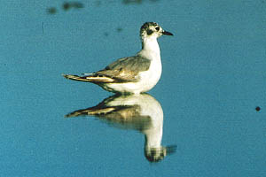
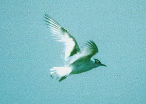

| These photographs accompany records that have been recently submitted to the committee. This record
has been ACCEPTED.  Little Gull Larus minutus 31 May 1999, SE Salton Sea, IMP 1999-098 © 1999 Kenneth Z. Kurland  Little Gull Larus minutus 23 May 1999, SE Salton Sea, IMP 1999-098 © 1999 Michael A. Patten Back to CBRC Rare Bird Photos |